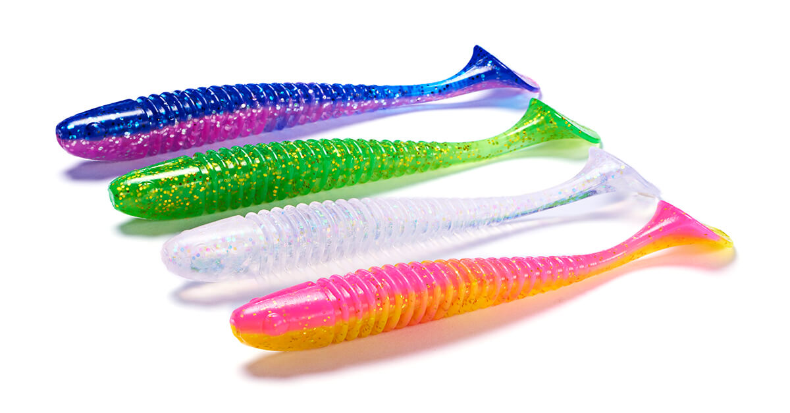
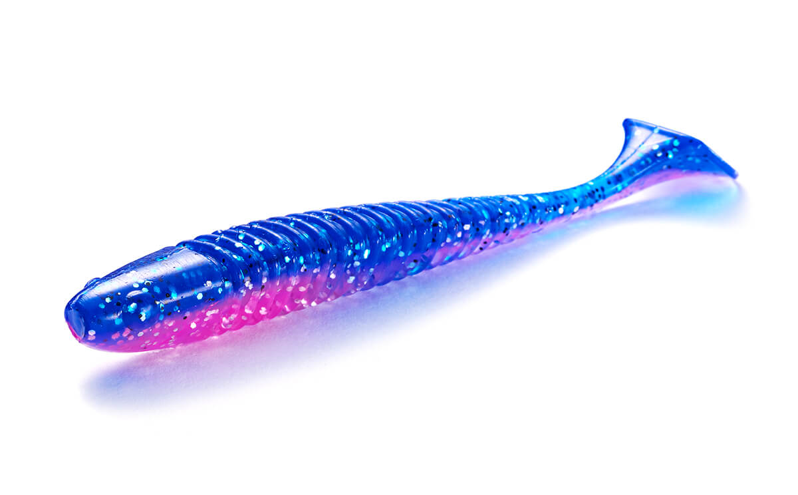
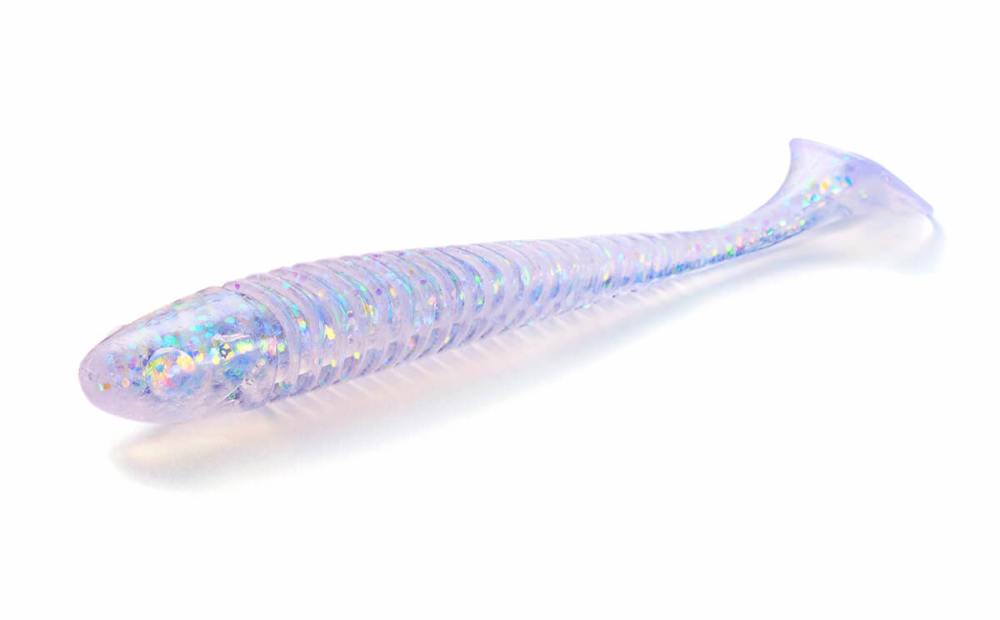
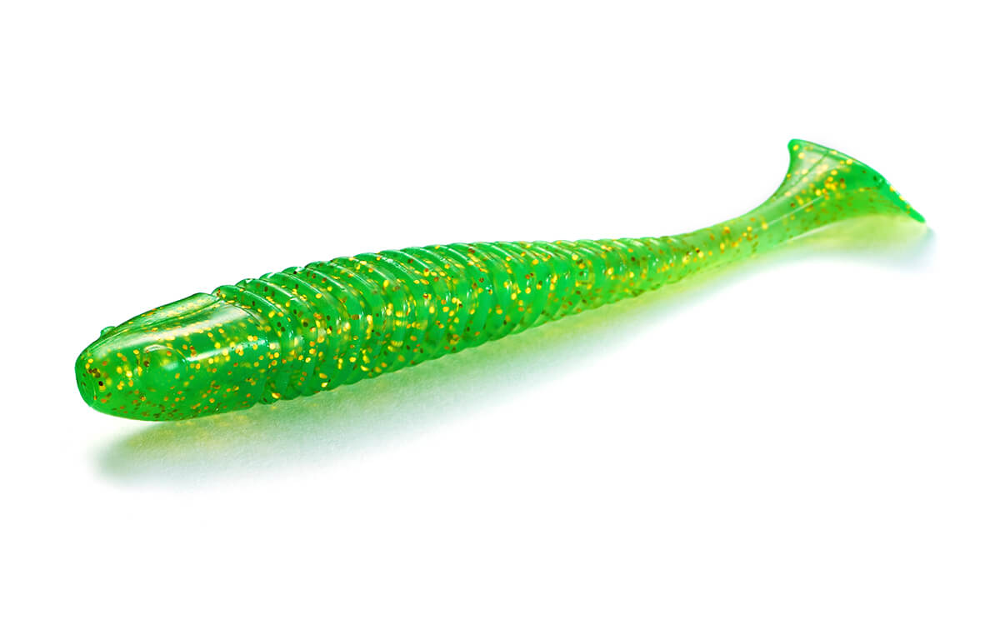
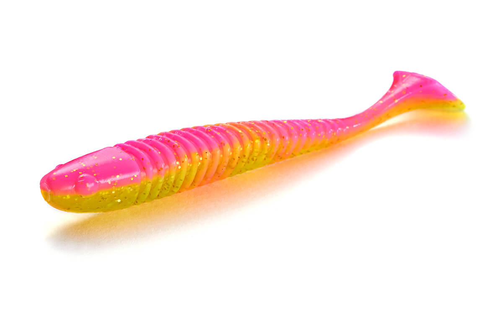
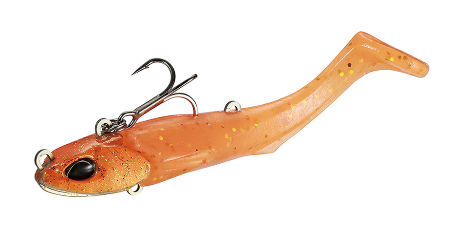
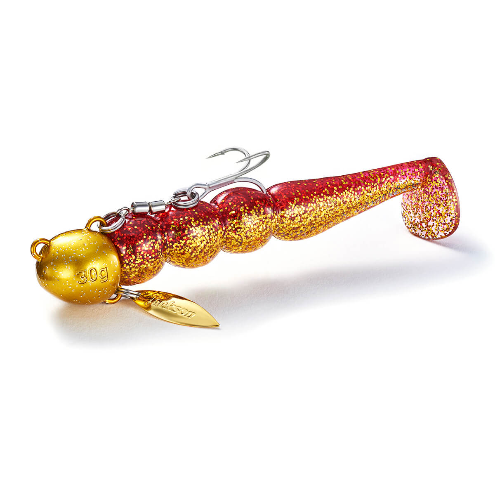

ボーンベイト
（Bone Bait）
ボーンベイトは、ジャクソンのシャッドテールワームです。
もともとはロックフィッシュ用の「ロックヘッズ」シリーズとして生まれましたが、ヒラメの釣果がたくさん報告され、サーフでフラットフィッシュを狙うためのサーフカラーが追加されました。基本性能を突き詰めた「究極のベーシックシャッドテール」です。

画像出典:Jackson公式HP
スペック
- メーカー
- Jackson（ジャクソン）
- タイプ
- シャッドテールワーム
- サイズ
- 3.5インチ（5本入）／4.5インチ（5本入）
- カラー
- サーフカラー全4色
- ターゲット
- ヒラメ・マゴチ・ロックフィッシュ
- 価格
- 770円（3.5インチ）／825円（4.5インチ）（税込）
▼今すぐチェック


ボーンベイトの特徴
ヒラメの釣果から生まれた、究極のベーシックシャッドテール
-
掛かりやすいハーフリブのフラットボディ
ボディは平たく、半分にだけリブ（溝）を入れた形。魚がくわえると一方向に曲がってフックが出やすく、フッキングしやすい。
-
着底でも微振動を出す細かいリブ
ボディの細かいリブが、底に着いた時にもわずかな振動を出す。ボトムに止めている時間も、魚にアピールし続けられる。
-
重いシンカーや速巻きでも回りにくい
ボディとテールのバランスを調整して、重いシンカーでのフォールや速巻きでもワームが回りにくい。サーフの重めのジグヘッドでも安定して泳ぐ。
ボーンベイトの使い方
着底したら1回シャクってアピールし、そのあとは底から30〜50cmを着底させずに、ゆっくりただ巻き＆時々シェイクするのが基本です。
ヒラメは上を向いてエサを待っているので、その目線の少し上を通すイメージで巻きましょう。駆け上がりでは、追ってきたヒラメが飛びついてくることもあります。
ボーンベイトの得意な状況
サーフでヒラメ・マゴチを狙う場面で出番です。
ロックフィッシュ用に作られた基本性能の高さで、底から少し上をゆっくり巻くだけでフラットフィッシュが釣れるのが強み。マダイやオオニベが釣れることもあります。
ワンポイント
カラーは時間帯で使い分けると効果的です。暗いうちの朝マズメはピンクゴールドなどのアピール系、明るくなったらクリアホロなどのナチュラル系に替えると、その時間に合った見せ方ができます。
人気カラー
ボーンベイトのサーフカラーを紹介します。

ブルピン青とピンクのアピールカラー。濁りや朝夕のマズメに。

クリアホロクリアにホロの輝き。明るい時間や澄んだ水に。

ライムグリーンライムグリーンで目立たせたい時に。

ピンクゴールド暗いうちの朝マズメのアピール系の定番。
画像出典:Jackson公式HP
▼今すぐチェック
ボーンベイトに似ているルアー
-
 サリュー
アダスタ
詳細はこちら＞
サリュー
アダスタ
詳細はこちら＞
フラットフィッシュ用のワーム。サーフで食わせたい時に。
-

ビーチウォーカー ジャンゴ DUO 詳細はこちら＞サーフ用のジグヘッドワーム。遠投して広く探りたい時に。
-

砂団子 ジャクソン 詳細はこちら＞同じジャクソンのサーフ用ワーム。ボトムでアピールしたい時に。